It seems like my leaderboard database is getting euthanized by the cloud provider because it's DorMaNT, which means it's time for the reveal.
Let's just dive in.
Investigation Log
All links to the game land on a fictional news site, 'The Denver Courier', which headlines a segment on a man that went missing in Downtown Denver.
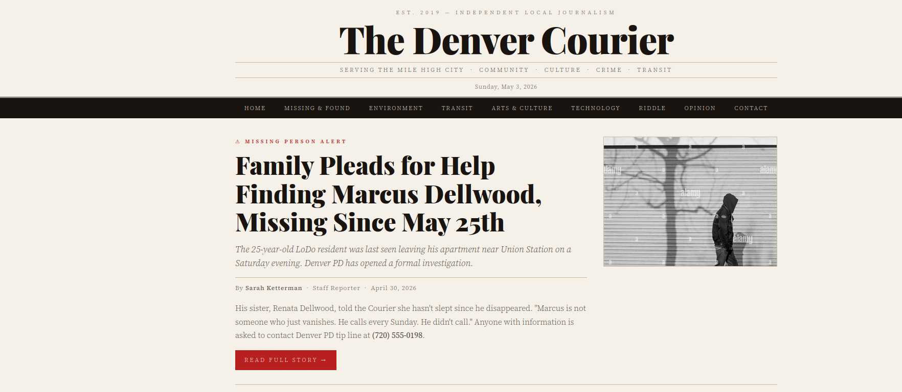
When you navigate to the article you'll see the basic premise of this narrative CTF. Seemingly normal guy suddenly disappears after mysterious circumstances, and the challenges throughout the game come with hints on what happens. There's nothing technical in this article.
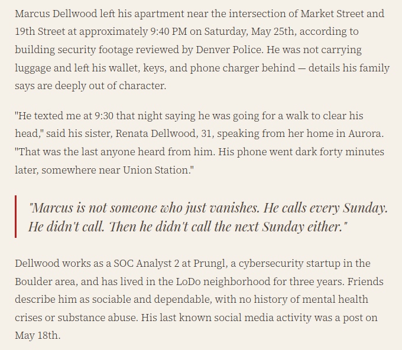
You'll also see a few other articles but the only one you need to focus on is, "Robots Like Texting, CU Boulder Researchers Discover."
This was initially the only hint I had since 'robots texting' can only mean one thing in web app security, but it seems like people were struggling with that so I added a banner that linked to robots.txt.
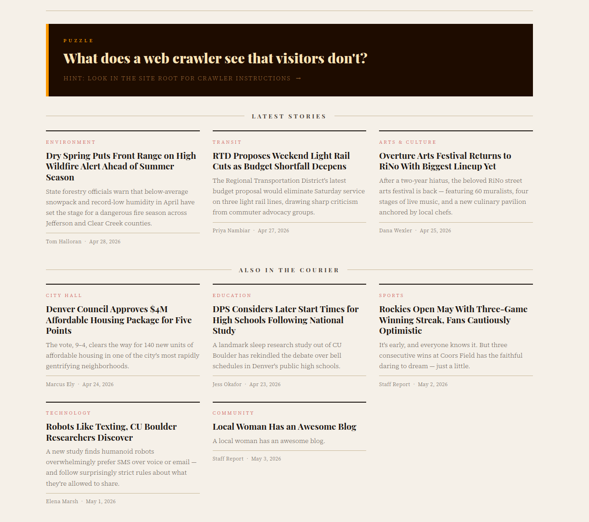
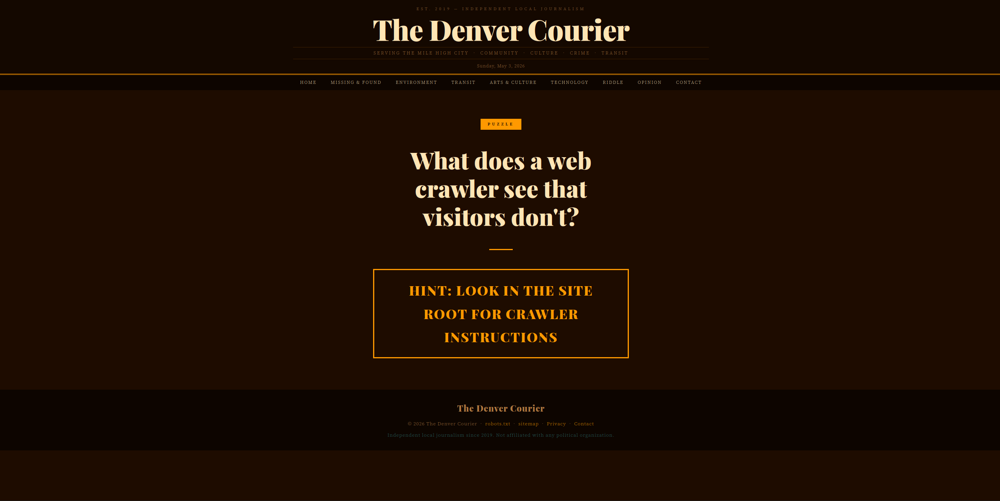
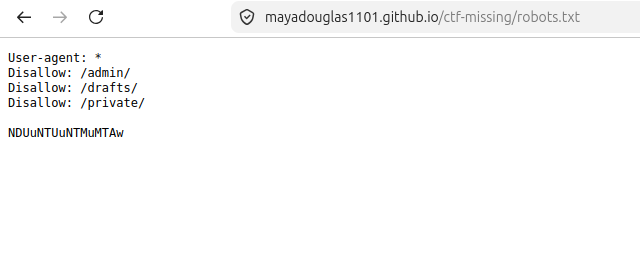
You'll see a strange string below the normal directory permissions. Most CTFs have some form of encoding/decoding challenges so I followed suit with base 64 encoding. You can simply go to a decoding website like the one below (or ask AI.)
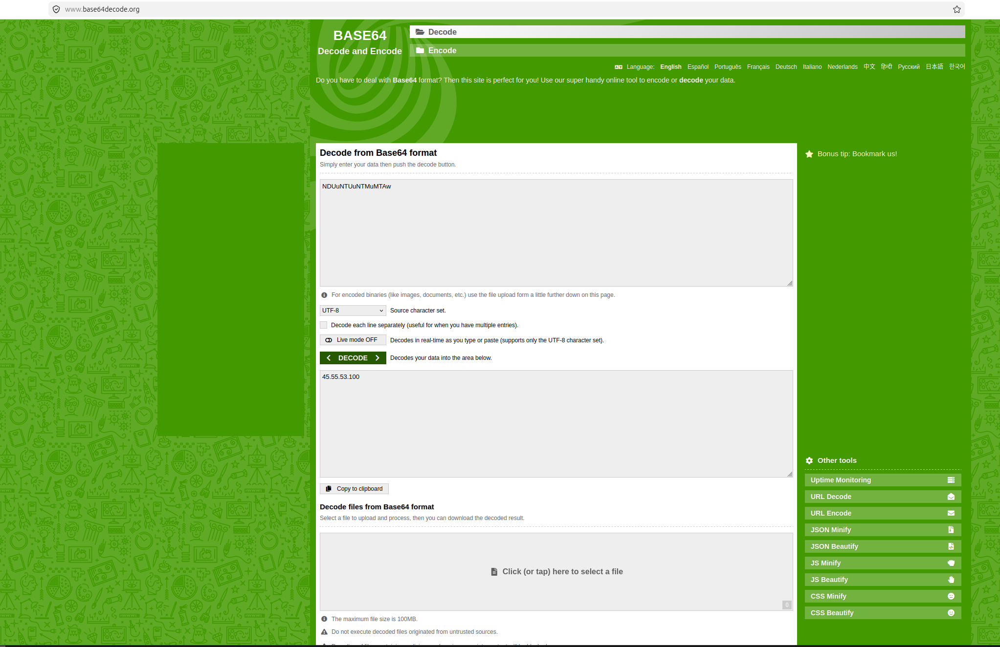
The decoded version is '45.55.53.100' which is the IP address of the VPS (Virtual Private Server) hosting the next clues.
Run a basic Nmap scan and you'll see the following ports are open.
maya@mayadesktop:~$ nmap -sV 45.55.53.100
Starting Nmap 7.94SVN ( https://nmap.org ) at 2026-05-17 19:06 MDT
Nmap scan report for 45.55.53.100
Host is up (0.052s latency).
Not shown: 994 closed tcp ports (conn-refused)
PORT STATE SERVICE VERSION
21/tcp open ftp pyftpdlib 2.2.0
22/tcp open ssh OpenSSH 9.6p1 Ubuntu 3ubuntu13.16 (Ubuntu Linux; protocol 2.0)
25/tcp filtered smtp
135/tcp filtered msrpc
139/tcp filtered netbios-ssn
445/tcp filtered microsoft-ds
Service Info: OS: Linux; CPE: cpe:/o:linux:linux_kernel
Nmap done: 1 IP address (1 host up) scanned in 2.16 seconds
The only open services are SSH and FTP, which is great because that's all you'll need.
Seems like Marcus is a bad security professional since he allows anonymous authentication on his diary FTP server. Connect using the following command with 'anonymous' as the username and a blank password.
maya@mayadesktop:~$ ftp 45.55.53.100 Connected to 45.55.53.100. 220 pyftpdlib 2.2.0 ready. Name (45.55.53.100:maya): anonymous 331 Username ok, send password. Password: 230 Login successful. Remote system type is UNIX. Using binary mode to transfer files.
Explore the directory and you'll find the following files.
ftp> ls -rw-r--r-- 1 root root 36 May 04 01:58 coords.txt -rw-r--r-- 1 root root 528 May 06 00:30 journal.txt -rw-r--r-- 1 root root 24 May 06 12:58 password.txt
Use the get command to download the files. It's generally good security hygiene to use a virtual machine for CTFs since you shouldn't be downloading random files onto your computer, but I promise you there's no malware here!
ftp> get coords.txt 226 Transfer complete. (36 bytes) ftp> get journal.txt 226 Transfer complete. (528 bytes) ftp> get password.txt 226 Transfer complete. (24 bytes) ftp> bye 221 Goodbye.
You'll find that one of the files, coords.txt, contains latitude/longitude coordinates. Go to Google Maps and paste 39.753187, -105.000093. Union Station will be a clue in an upcoming challenge.
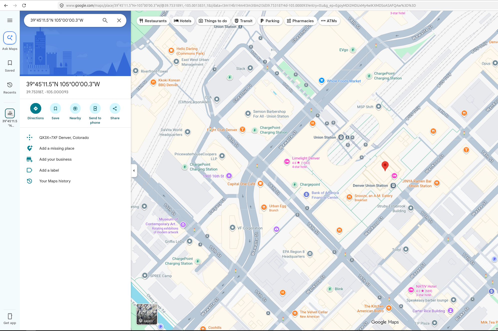
Use the cat command on password.txt and you'll find a series of dots and dashes.
maya@mayadesktop:~$ cat password.txt ----- ..... ..--- .....
This is morse code. You can go to a morse code decoder (or ask AI) and it'll reveal the pin '0525.' Congratulations! We have our password.
We also get some very upbeat diary entries from Marcus.
maya@mayadesktop:~$ cat journal.txt
March 3, 2026
Renata called again. Told her I'm fine. I am fine. Just tired.
Paid $22 for a grain bowl on Larimer today. Quinoa, some sad little
pickled things, a drizzle of "house goddess dressing" or whatever.
Ate it at my desk. Denver is cooked.
April 2, 2026
Something feels off lately. Can't place it.
Went for a walk down by the water after work. Helped a little.
April 18, 2026
Last entry for a while. Going dark.
If you're reading this and you're not me — you're closer than you think.
Follow the numbers.
- M
Unfortunately I may have misled some of the players since this part requires you to ATTEMPT to authenticate — but you don't have to succeed at all.
You'll find a link to a Codepen site via banner grabbing.
maya@mayadesktop:~$ ssh fakeuser@45.55.53.100 MARCUS-SECRET-STUFF // UNAUTHORIZED ACCESS DETECTED https://codepen.io/mayadouglas1101/pen/QwGbMNX fakeuser@45.55.53.100: Permission denied (publickey).
You'll land on the Codepen page below — (The Marcus Aurelius reference is a shoutout to the philosophy side of symbolic logic/set theory. I'm not a stoic, I promise.)
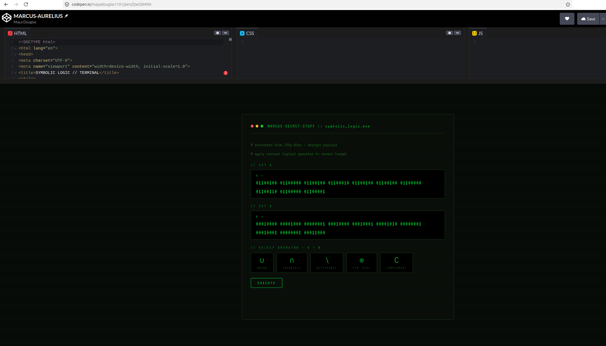
You're presented with two binary strings along with some choices of what operator to use. We found the coordinates for Union Station earlier, so the correct operator to use here is union as well. There's a button that does all the calculating for you.
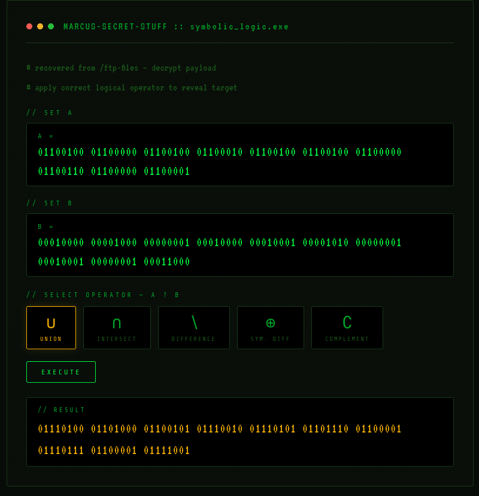
Put that in a binary decoder and you'll get 'the runaway.'
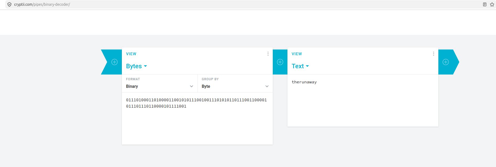
The phrase "the runaway" is the username for a hidden login portal connected to the original Denver Courier site. Running DirBuster against the landing page (or manually navigating to /login) reveals the link to the portal.
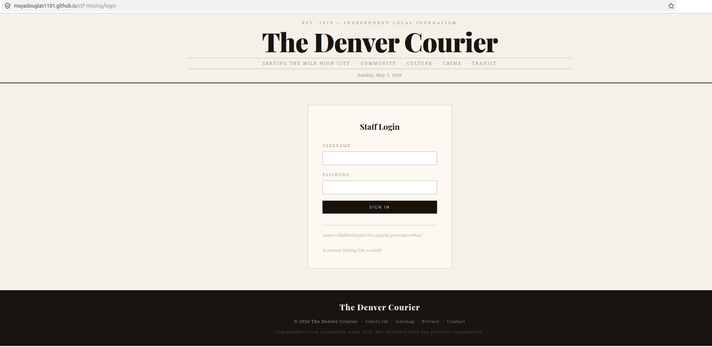
You'll see there's a link-like string, oaawz://thfhkvbnshz1101.npaobi.pv/svnpu-whnl/, but it isn't formatted like a domain. 'Is anyone feeling like a salad' is a clue to the cipher used — Caesar cipher. Decode it with a website (or AI) to reveal https://mayadouglas1101.github.io/login-page/.
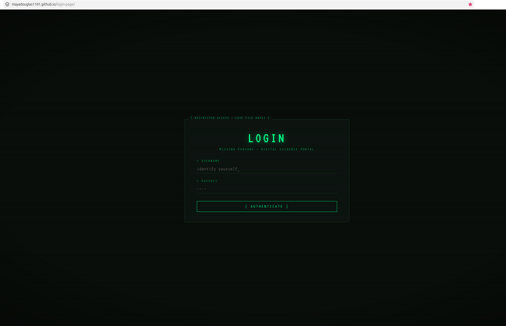
Enter the credentials 'therunaway' and '0525' in 'Secure Terminal' and you'll find Marcus's confession.
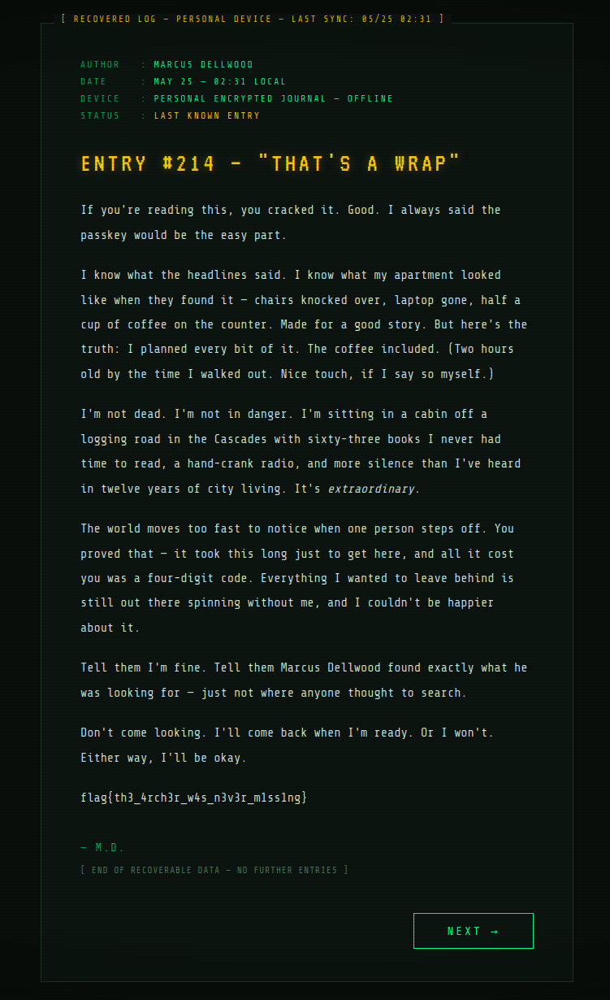
At this point, Marcus disappearing into the wilderness may have been the healthiest possible outcome for everyone involved.
That's all, folks! There is a leaderboard, but I won't be sharing it here for privacy purposes.
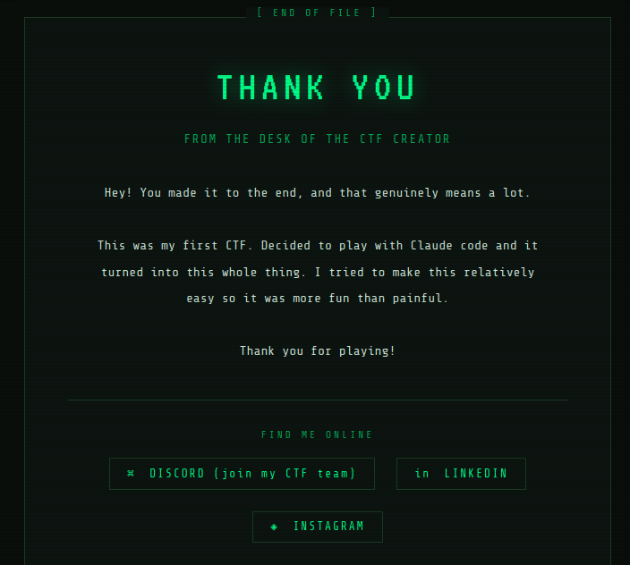